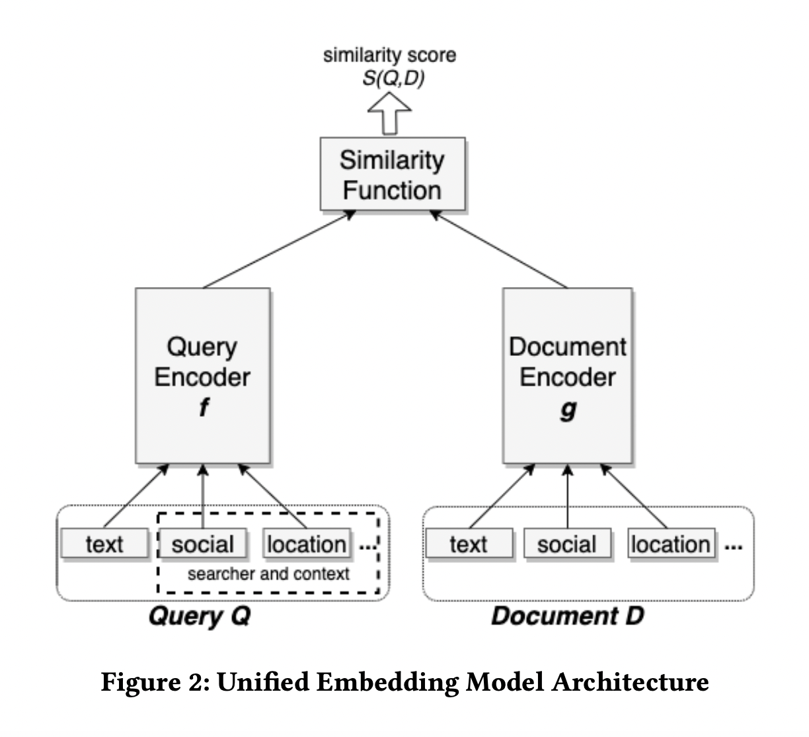

2. 召回
召回针对的是索引库中的全部 Item，主要作用是实行炮火覆盖、全面打击，将 User 的兴趣一网打尽， 因此很多时候召回往往不是一路召回而是多路召回，每一路召回都从不同的用户兴趣出发点去捞取一定量的 Item， 然后再将每一路召回的 Item 融合去重再送入粗排。
- 统计
热度，LBS
- 协同过滤
UserCF，ItemCF
- U2T2I
基于 User Tag 召回
- I2I
Swing ，Embedding（Word2Vec、FastText），Graph Embedding（Node2Vec、DeepWalk、EGES）
- U2I
DSSM 双塔 ， Youtube DNN ，Sentence Bert
召回处于整体推荐链条的前端，其结果经过粗排、精排两次筛选，作用于最终业务指标时，影响力就大大减弱了。 受限于巨大的候选集和实时性要求，召回模型的复杂度受限，不能上太复杂的模型。
2.1. 协同过滤
协同过滤（Collaborative Filtering）是一种在推荐系统中广泛使用的技术。 该技术通过分析 User 或者 Item 之间的相似性（“协同”），来预测用户可能感兴趣的内容并将其推荐给用户。这里的相似性可以是人口特征（性别、年龄、居住地等）的相似性，也可以是历史浏览内容的相似性（比如都关注过和中餐相关的内容）等。比如，用户 A 和 B 都是居住在北京的年龄在 20-30 岁的女性，并且都关注过化妆品和衣物相关的内容，这种情况下，协同过滤可能会认为 A 和 B 相似程度很高，于是可能会把 A 关注但 B 没有关注的内容推荐给 B，反之亦然。
Memory-Based Collaborative Filtering
其实就是基于最近邻的协同过滤，可分为两类：
基于用户（User-Based）的协同过滤
收集用户信息。
最近邻搜索(Nearest Neighbor Search, NNS)，计算用户之间的相似度。
产生推荐结果。例如：透过对 A 用户的最近邻用户进行统计，选择出现频率高且在 A 用户的评分项目中不存在的推荐给A。
基于项目（Item-Based）的协同过滤
基本假设：能够引起用户兴趣的项目，必定与其之前评分高的项目相似。
收集用户信息。
针对项目的最近邻搜索，计算项目之间的相似度。
产生推荐结果。由于未考虑用户间的差别，所以精度比较差。但是却不需要用户的历史数据，或是进行用户识别。对于项目来讲，它们之间的相似性要稳定很多，因此可以离线完成工作量最大的相似性计算步骤，从而降低了在线计算量，提高推荐效率。
Model-Based Collaborative Filtering
Memory-Based Collaborative Filtering 缺点是数据稀疏，难以处理大数据量，会影响即时结果。 以模型为基础的协同过滤是先用历史数据得到一个模型（关联算法、聚类、分类、矩阵分解等），再用此模型进行预测。
矩阵分解方法基于 User-Item 关系矩阵 \(R \in \mathbb{R}^{m \times n}\) 的 低秩性 假设（某些行/列存在相关性），对其进行分解，比如：
其中 \(P \in \mathbb{R}^{m \times d},\ Q \in \mathbb{R}^{n \times d},\ d \ll m,n\) 。优化目标是观测到的样本的 MSE Loss + L2 正则。 这样一来，衡量一对 User 和 Item 之间的相关性只要计算两个向量 \(\boldsymbol{p}\) 和 \(\boldsymbol{q}\) 之间的相似度。
2.2. Swing
出发点：如果大量用户同时喜欢两个物品，且这些用户之间的相关性低，那么这两个物品一定是强关联。
\(U_{i}\) 是喜欢物品 \(i\) 的用户集合；\(I_{u}\) 是用户 \(u\) 喜欢的物品集合。
2.3. 向量化召回
{kind=link}
双塔是召回+粗排的绝对主力模型。
训练：
User 侧特征输入一个 DNN，得到一个 User Embedding。
Item 侧特征输入一个 DNN，得到一个 Item Embedding。
两个 Embedding 做内积运算得到 Logit，进入损失函数。
离线向量化：
所有 Item Embedding 离线推断好。
构建好 ANN 向量索引（比如 FAISS ）。
线上部署：
实时 User 特征输入 User Tower 得到 User Embedding。
用 User Embedding 在 ANN 索引中查找最近邻，得到召回结果。
User 侧信息与 Item 侧信息只有唯一一次交叉机会，就是在双塔生成各自的 Embedding 之后的那次点积， 但是这时参与交叉的 User/Item Embedding 已经是高度浓缩的了，一些细节信息已经损失，永远失去了与对侧信息交叉的机会。
负样本
如果说排序是特征的艺术，那么召回就是样本的艺术，特别是负样本的艺术。 要破除“召回照搬排序”的迷信，不能（只）拿“曝光未点击”做负样本。
离线训练数据的分布，应该与线上实际应用的数据保持一致。从线上日志获得的训练样本，已经是上一版本的召回、粗排、精排替用户筛选过的，即已经是对用户“比较靠谱”的样本了。拿这样的样本训练出来的模型做召回，一叶障目，只见树木，不见森林。
基本思想：拿点击样本做正样本，拿随机采样做负样本。
- 全局随机负采样
随机从全场景曝光过 Item 采样，使用 Listwise 存储负样本，能够最大程度保证数据分布一致，但随机采样的负样本有可能跟正样本差异大。
- In Batch 负采样
Batch 内负采样是有损的，但实验对比在可接受范围内，而且负样本都是其他正样本，因此具有一定热度打压的作用。
- Popularity 负采样
基于随机负采样，加入热度 Item 作为负样本。因为热门 Item 没有作为正样本，那么极有可能该 Item 是不相关或者用户不感兴趣。
- Hard 负采样
模型在训练/Serving时，总有部分 Item 逃过模型的法眼，透传到粗排甚至精排当中。因此可以通过线上日志中找出有召回但粗排过滤的，有召回但没有曝光；又或者在训练过程当中，从 Item 库中检索相似度高于某一个阈值的 Item 并随机选取。此举可以提高模型的精度，过滤无关的 Item。
当热门 Item 做正样本时，要降采样，减少对正样本集的绑架，避免所有人的召回结果都集中于少数热门 Item。
当热门 Item 做负样本时，要适当过采样，抵销热门 Item 对正样本集的绑架；同时，也要保证冷门 Item 在负样本集中有出现的机会。
2.4. Loss
Youtube DNN 模型选择了 Sampled Softmax Loss 作为损失函数。 对于二分类而言，BCE Loss 只是比较正负样本的差距，而且每次 Loss 的计算中，都是判断一个样本是正还是负，并没有纵向的对比。 对于 Softmax Loss 而言，其是一次性进行多个 Item 之间的比较，而且在每一次的 Loss 计算中，都会将正样本和多个负样本进行比较，并且告诉模型正样本是和这一批负样本很不同的。Softmax Loss 训练出来的 Embedding 的区分性更好。 直观上，这种 Loss 的优化目标和向量化召回是更一致的。
EBF 采用的是 Triplet Loss。
2.5. 离线指标
- Recall，Precision
\(R(u)\) 表示召回 Item 的集合，\(A(u)\) 表示用户感兴趣的 Item 的集合（比如点击过的 Item）。
\[\begin{split}\mathrm{recall} & = \frac{\sum_{u} | R(u) \cap A(u) |}{\sum_{u} | A(u) |} = \frac{\#hits}{\sum_{u} | A(u) |} \\ \mathrm{precision} & = \frac{\sum_{u} | R(u) \cap A(u) |}{\sum_{u} | R(u) |}\end{split}\]- NS-Recall，NS-Precision
负采样的召回和准确率，主要针对 Top-N 这类召回设计，用于衡量算法相对于随机能否发现用户兴趣。 对于每一个正例 Item，都随机采样一些负样本，打分、排序，然后在这个只有一个正样本的排序列表中计算 Recall 和 Precision（只有 \(0\) 和 \(\frac{1}{N}\) 两种可能）。
\(T\) 是所有正例 Item 的个数。
\[\begin{split}\mathrm{recall}@N & = \frac{\#hits}{| T |} \\ \mathrm{precision}@N & = \frac{\#hits}{N \cdot | T |} = \frac{\mathrm{recall}@N}{N}\end{split}\]- Hit Rate，Average Reciprocal Hit-Rank
ARHR 度量了一个 Item 被推荐的强烈程度。
\[\begin{split}\mathrm{hr} & = \frac{\#hits}{\#users} \\ \mathrm{arhr} & = \frac{1}{\#users} \sum_i^{\#hits} \frac{1}{rank_i}\end{split}\]
还需要考虑召回的丰富度（比如类目）、和其他路的重合度等。
此外，推荐系统中长尾效应十分明显，上述指标易受到头部数据的干扰，且大部分召回对尾部的学习不如头部数据好，因此可以增加单独的 长尾指标 。
2.6. 参考资料
推荐系统[四]：精排-详解排序算法LTR (Learning to Rank)
负样本为王：评Facebook的向量化召回算法
Embedding-based Retrieval in Facebook Search
久别重逢话双塔
推荐算法召回-粗排-精排链路总结
一文说尽推荐系统的召回模型
推荐系统[八]算法实践总结V1：淘宝逛逛and阿里飞猪个性化推荐：召回算法实践总结【冷启动召回、复购召回、用户行为召回等算法实战】
Trust your neighbors: A comprehensive survey of neighborhood-based methods for recommender systems
召回常用评估指标
推荐系统之矩阵分解家族